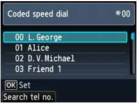
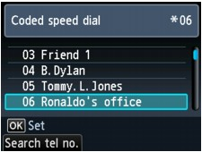
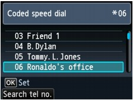

Registering recipient's fax/telephone number and name for coded speed dial or group dial enables you to send faxes easily.
 Important
Important-
It may be possible that faxes will reach unintended recipients due to the misdialing or incorrect registration of fax/telephone numbers. When you send important documents, it is recommended that you send them after speaking on the telephone. For details, see Sending a Fax after Speaking on Telephone.
-
Make sure that the machine is turned on.
-
Press the FAX button.
The Fax standby screen is displayed.
-
Load documents on the Platen Glass or in the ADF.
-
Adjust the scan contrast and resolution as necessary.
 Note
Note-
For details on how to adjust the scan contrast and resolution, refer to Faxing.
-
-
Press the Coded Dial button.
The screen to select a coded speed dial code or a group dial code is displayed.
Note-
When Enter first letter is displayed on the LCD, you can search the recipient's name by sorting in alphabetical order and send the fax.
 Searching a Registered Recipient by Name
Searching a Registered Recipient by NameTo return to the screen to select the coded speed dial code or the group dial code, press the left Function button.
-
-
Select a coded speed dial code or a group dial code.
-
Use the

 button or the Numeric buttons to select a coded speed dial code or a group dial code.
button or the Numeric buttons to select a coded speed dial code or a group dial code. -
Press the OK button.
-
-
Press the Color button for color transmission, or the Black button for black & white transmission.
Important-
Color transmission is available only when the recipient's fax machine supports color faxing.
-
Note-
To cancel a fax transmission, press the Stop button. To cancel a fax transmission while it is in progress, press the Stop button, then follow the instructions on the LCD.
-
If documents remain in the ADF after the Stop button is pressed while scanning is in progress, Document in ADF. Press OK to eject document. is displayed on the LCD. Press the OK button and follow the instructions on the LCD to automatically feed out the remaining documents.
-
In case the machine was not able to send a fax, such as when the recipient's line was busy, it has the function to automatically redial the number after a specified interval. Automatic redialing is enabled by default.
To cancel automatic redialing, wait until the machine starts redialing, then press the Stop button.